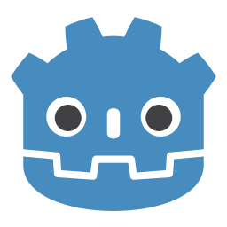

Godot

Godot default logo.
Godot
STATUS: this page's content isnt finished yet.
(generic info) godot is an open source game engine released under the MIT License.
It was initially developed in Buenos Aires by Argentine software developers Juan Linietsky and Ariel Manzur[3]
for several companies in Latin America prior to its public release in 2014.[4] The development environment runs
on many platforms, and can export to several more. It is designed to create both 2D and 3D games targeting PC,
mobile, web, and virtual, augmented, and mixed reality platforms and can also be used to develop non-game software.